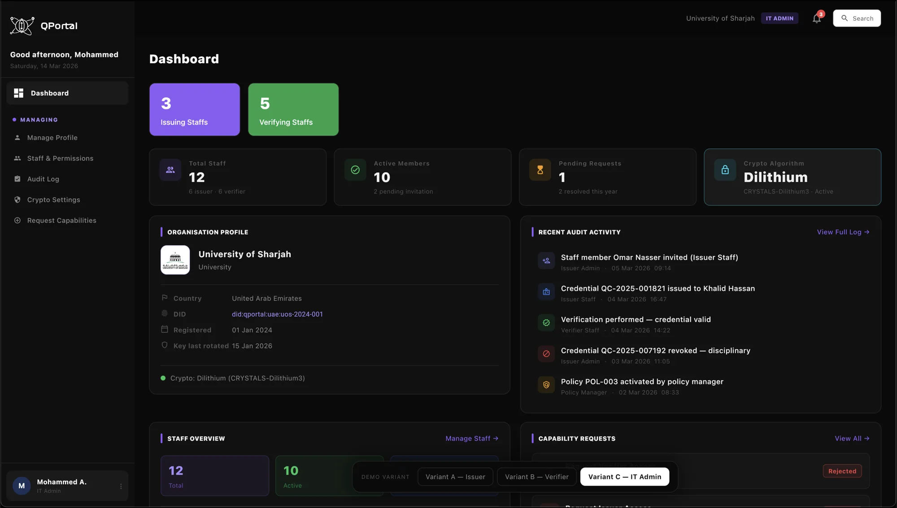

Platforms
QPortal issues.
QWallet holds.
A web console for the institutions and a phone wallet for the people the credentials are about. Both are Flutter. Both are open source.
QPortal · Flutter web
One console, three desks.
Issuers, verifiers and IT admins sign in to the same place and see only their part of it.

01 · Issuer
Issue
Design a schema, drop in a CSV, sign a whole graduating class with ML-DSA-44.
- Schema studio with field validation
- Batch issuance with progress tracking
- Revoke or suspend, recorded on-chain
02 · Verifier
Verify
Scan a wallet QR or look up a transaction. The console rebuilds the hashes and checks them against the ledger.
- Policy rules, such as minimum GPA or accredited issuer
- Fails closed on any mismatch
- Alerts when a credential is revoked
03 · IT admin
Govern
Manage who can do what, choose the signature scheme, keep an eye on the network.
- Roles for issuers, verifiers and admins
- Log of every issuance and policy change
- Peer, orderer and IPFS health
QWallet · iOS and Android
Your credentials, on your phone, under your keys.
Side by side
Who does what.
| QPortal | QWallet | |
|---|---|---|
| Used by | Universities, employers, IT admins | Students, alumni, any credential holder |
| Runs on | Web, desktop and tablet. Flutter behind Nginx | iOS and Android. Flutter with secure enclave and biometrics |
| Signs | Credentials at issuance, ML-DSA-44 | Presentations, ML-DSA-44 |
| Checks / opens | Validates issuer and holder signatures | Decrypts its own credentials, ML-KEM-768 |
| Ledger | Submits transactions to Fabric | Reads anchors, fetches ciphertext from IPFS |
| Offline | No. Needs the network | Yes. Presents from local storage |